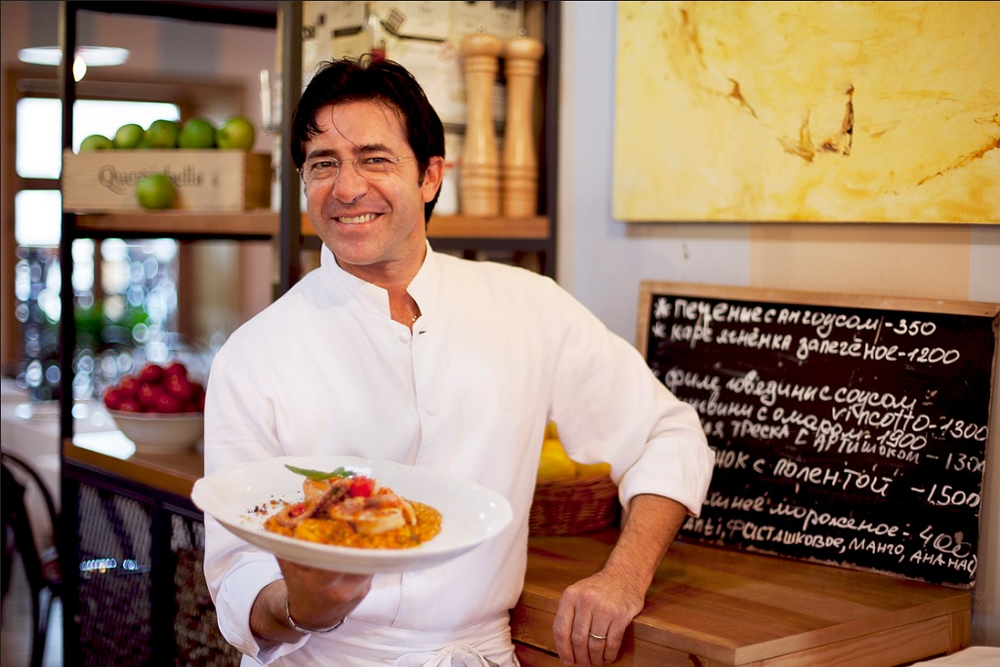
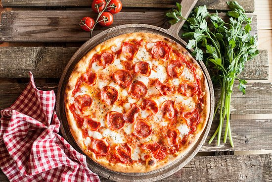
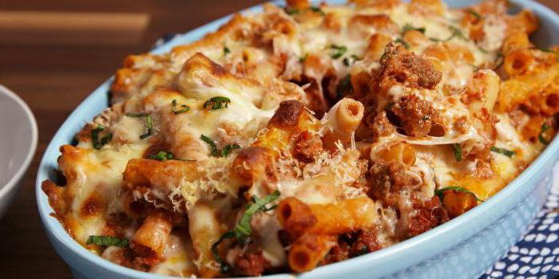
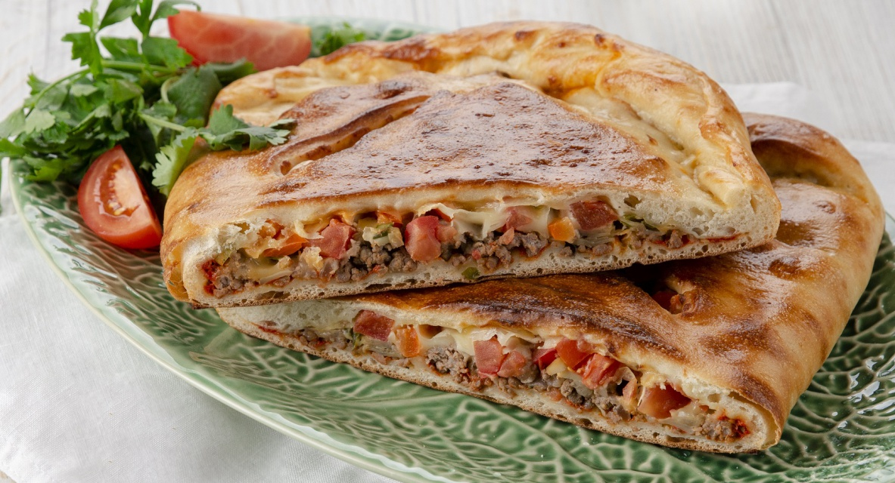
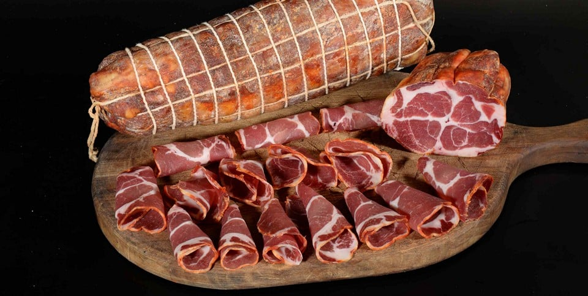
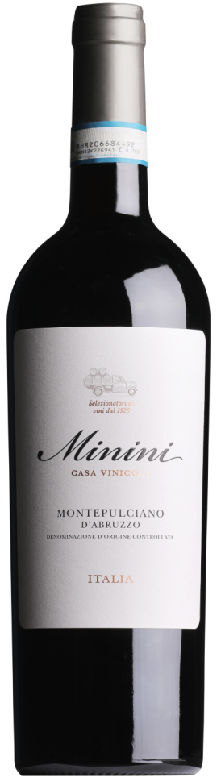
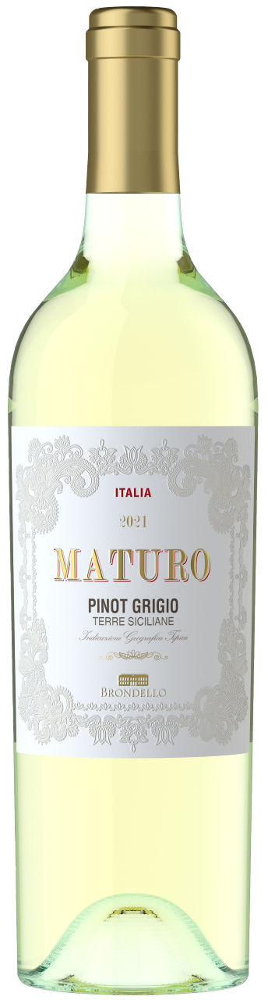

Наша продукция
!Отвечаем головой!
Наши лучшие повара стараются каждый день, чтобы каждый ваш прием пищи всегда был прекрасным
Предлагаем ознакомиться с нашим меню:
Традиционные блюда
-
Pizza salami picante
Пицца салями пиканте - это итальянская пицца с острым вкусом, в основе которой лежит томатный соус, сыр моцарелла и пикантная салями.
Цена: 350 руб. -
Ziti
Зити - это запеканка из пасты «зити», которую традиционно подают на свадьбы, и которая стала особенно известной благодаря сериалу «Сопрано». Запеченные зити обычно готовят с томатным соусом, мясом, колбасками и сырами.
Цена: 420 руб. -
Lasagna

Лазанья - блюдо итальянской кухни, традиционно приготовляемое из тонких листов теста со слоями различной начинки.
Цена: 290 руб. -
Pasta carbonara

Паста карбонара - спагетти с мелкими кусочками гуанчиале или панчетты, смешанные с соусом из яиц, сыра пекорино романо, соли и свежемолотого чёрного перца.
Цена: 285 руб. -
Calzone
кальцоне - итальянский пирог, закрытая форма пиццы в виде полумесяца. Типичное блюдо центральных и южных регионов Италии.
Цена: 320 руб. -
Risotto

Ризотто - это итальянское блюдо из риса с кремообразной текстурой, которое готовится путем медленного добавления горячего бульона и постоянного помешивания. Главный секрет ризотто — это техника приготовления, а не только ингредиенты. Обычно используют специальные сорта риса с высоким содержанием крахмала, такие как «Арборио» или «Карнароли».
Цена: 270 руб.
Мясные блюда
-
Capocollo
Капоколло - традиционная итальянская и корсиканская мясная нарезка из свинины, приготовленная из вяленых мышц, идущих от шеи к четвертому или пятому ребру свиной лопатки или шеи.
Цена: 440 руб. -
Ossobuco

Оссобуко - это итальянское блюдо из тушёной говяжьей или телячьей голяшки с мозговой костью в центре, что буквально переводится как «полая кость». Для его приготовления мясо обжаривают, а затем долго тушат в овощном соусе с вином или бульоном до очень нежного и сочного состояния. Традиционно его подают с ризотто по-милански, но также хорошо подходит картофельное пюре или паста.
Цена: 510 руб.
Напитки
Алкогольные
-
Montepulciano d'Abruzzo Minini
Montepulciano d'Abruzzo Minini - Вино демонстрирует яркий красно-рубиновый цвет с легкими фиолетовым отливом. Ароматы красных ягод, фруктовый, немного танинный вкус, приятное сухое послевкусие.
Цена: 3400 руб. -
Castellani Maturo Pinot Grigio
Castellani Maturo Pinot Grigio - Вино золотисто-желтого цвета с зеленоватыми отблесками. Имеет свежий, насыщенный фруктовый букет в аромате, с тонами спелых яблок, груш, цитрусовых, экзотических фруктов, переходящих в цветочные оттенки. Во вкусе повторяются ключевые ароматы, вино прекрасно сбалансированное, с приятной освежающей хрустящей кислотностью. Идеально подходит в качестве аперитива, а также для сопровождения блюд из белого мяса, курицы, рыбы и овощных салатов.
Цена: 2650 руб.
Безалкогольные
-
Latte

Латте - кофейный напиток на основе эспрессо и вспененного молока с невысоким слоем молочной пены. Он готовится из одной части эспрессо и двух или более частей горячего молока, что придает ему мягкий и сливочный вкус.
Цена: 270 руб. -
Cappuccino

Капучино - это итальянский кофейный напиток на основе эспрессо, горячего молока и молочной пены. Классический рецепт включает три равные части: эспрессо, горячего молока и густой пены. Для приготовления используется горячий вспененный молочный слой, который придаёт напитку воздушность и бархатистость, делая вкус более мягким по сравнению с обычным эспрессо.
Цена: 270 руб.
Контактная информация
По вопросам франшизы - звонить по номеру: +7-***-***-98-35
Или писать на почту: mikh.aponasenko@mail.ru
Оставляйте отзывы на сайте: www.review.ru